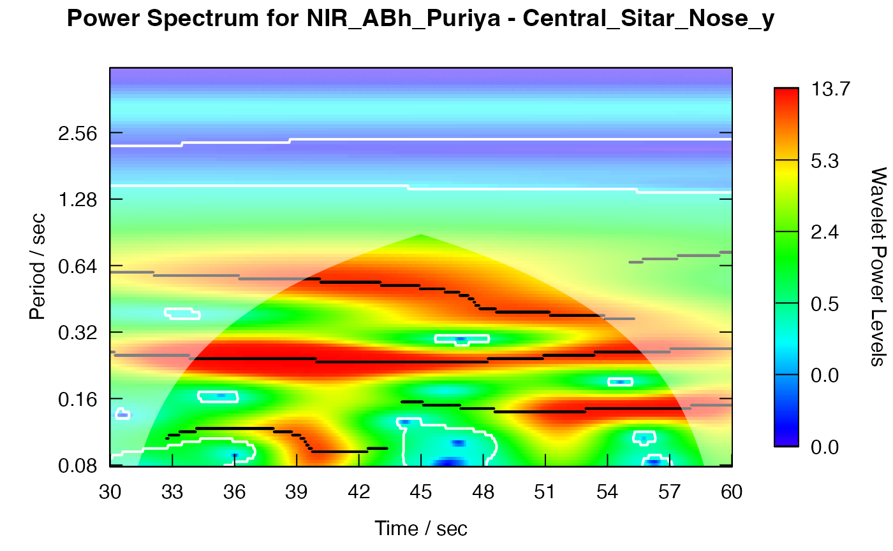
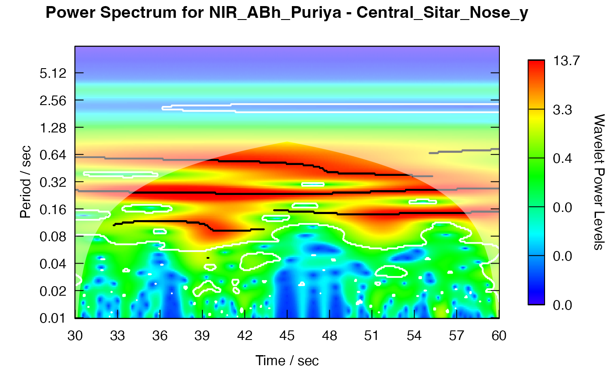

Plot a power spectrum of a wavelet object
plot_power_spectrum.RdPlot a power spectrum of a wavelet object
Arguments
- obj
analyze.wavelet object.
- view
View object.
- ...
passed to
WaveletComp::wt.image().
See also
Other wavelet functions:
analyze_coherency(),
analyze_wavelet(),
get_local_max_average_power(),
plot_average_coherency(),
plot_average_power(),
plot_cross_spectrum(),
plot_cwt_energy(),
plot_phase_difference(),
plot_roll_resultant_length(),
plot_sel_phases(),
plot_wt_energy()
Examples
r <- get_sample_recording()
rv <- get_raw_view(r, "Central", "", "Sitar")
pv <- get_processed_view(rv)
pv1 <- subset(pv, Time >= 30)
w <- analyze_wavelet(pv1, "Nose_y")
#> Starting wavelet transformation...
#> ... and simulations...
#>
|
| | 0%
|
|======================================================================| 100%
#> Class attributes are accessible through following names:
#> series loess.span dt dj Wave Phase Ampl Power Power.avg Power.pval Power.avg.pval Ridge Period Scale nc nr coi.1 coi.2 axis.1 axis.2 date.format date.tz
plot_power_spectrum(w, pv1)

w <- analyze_wavelet(pv1, "Nose_y", lowerPeriod = 0.01, upperPeriod = 10)
#> Starting wavelet transformation...
#> ... and simulations...
#>
|
| | 0%
|
|======================================================================| 100%
#> Class attributes are accessible through following names:
#> series loess.span dt dj Wave Phase Ampl Power Power.avg Power.pval Power.avg.pval Ridge Period Scale nc nr coi.1 coi.2 axis.1 axis.2 date.format date.tz
plot_power_spectrum(w, pv1)
